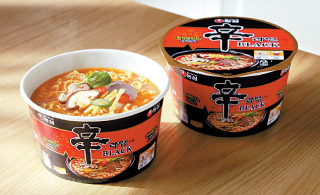

Cup Noodle

Description
Every college student should be familiar with this. The old reliable food when you are simply too lazy to make anything. Perfect for lazy days and hangover.
Ingredients
- Cup noodle of choice
- Hot water
Steps
- Boil a good amount of water.
- Once water if ready, open the cup noodle lid halfway and take out packaged contents.
- Open the packaged content and pour into the cup.
- Add boiling water until the line marked on the cup.
- Wait the recommended amount of time on the cup's instructions.
- Once it's ready, peel the lid off and enjoy your lazy day snack.